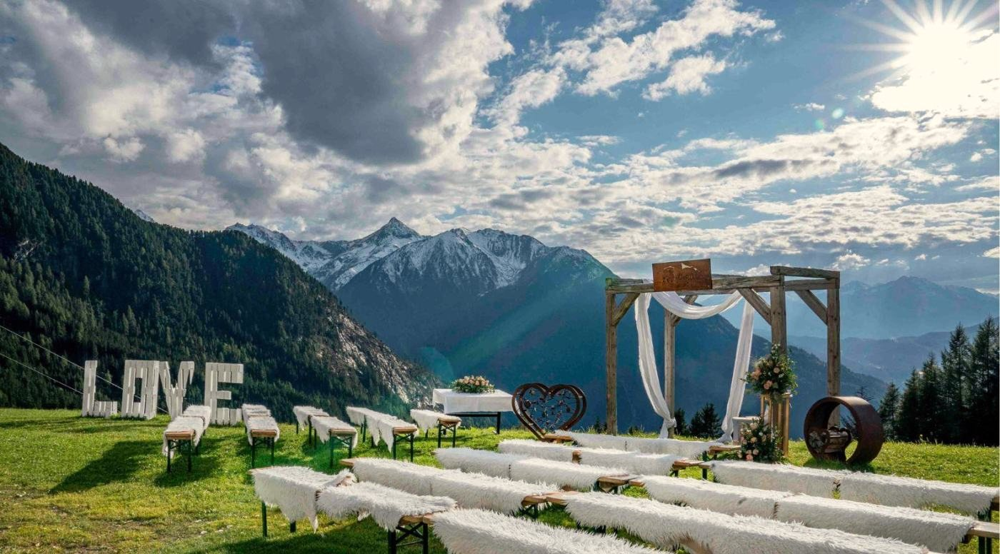
Save the Date
Unsere Hochzeit
Im August 2026 haben wir standesamtlich geheiratet. Jetzt folgt die kirchliche Trauung – und das möchten wir ausgiebig mit euch feiern!
Auf dieser Website findet ihr vorab einen ersten Überblick über den Ort und den groben Tagesablauf.
Bitte merkt euch diesen Termin schon fest im Kalender vor. Die Einladung zur Hochzeit folgt noch!
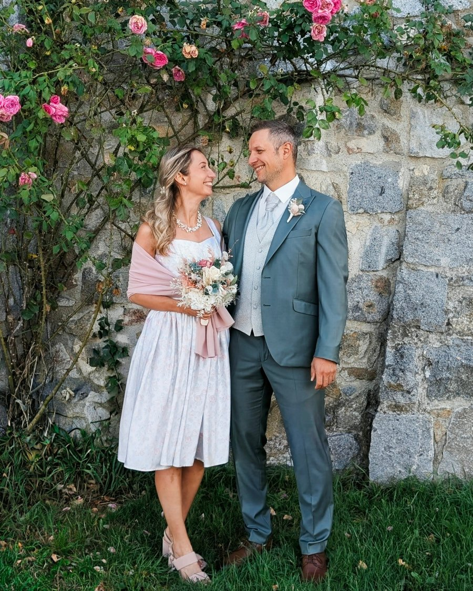
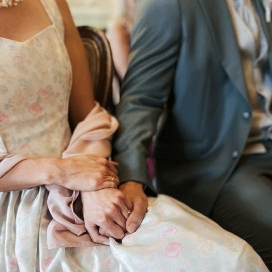
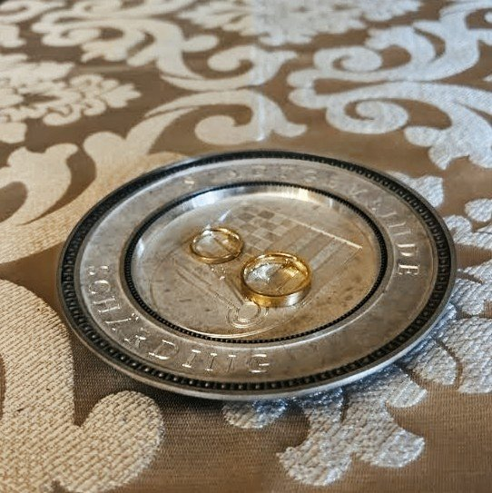
Der Tag
So stellen wir uns den Tag ungefähr vor. Der genaue Ablauf folgt mit der Einladung.
Danach fahren wir gemeinsam ins Pitztal.
Ankommen, Zimmer beziehen und auf der Terrasse oder im Wintergarten anstoßen.
Mehrgängiges Menü mit allem, was das Herz begehrt.
Musik, Tanzen und eine Mitternachtsjause.
Frühstück bis 11:00 Uhr
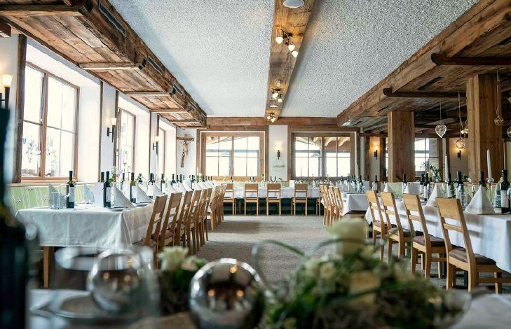
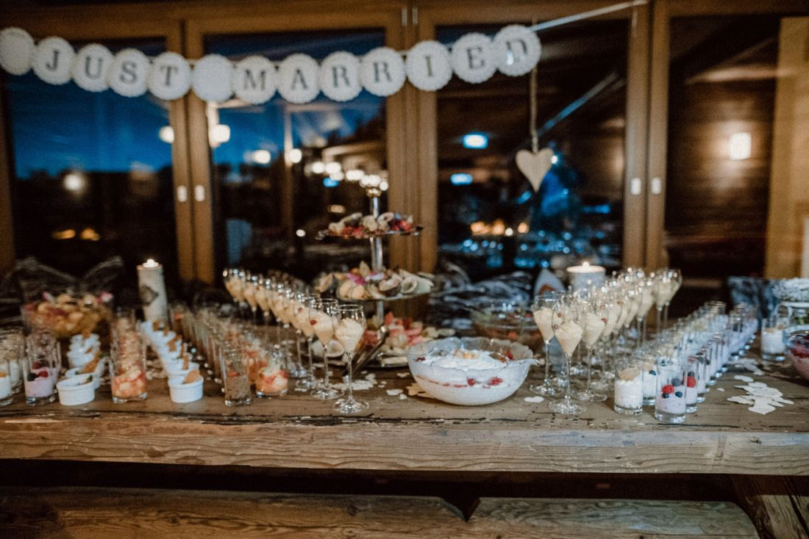
Der Ort
Das Hochzeiger Haus ist ein Hotel oberhalb von Jerzens, mit einer Wiese und Bergblick rundherum. Gefeiert wird im Saal und im Wintergarten, bei schönem Wetter auch draußen auf der Terrasse. An dem Wochenende ist das ganze Haus für uns reserviert, es wird keine anderen Gäste geben.
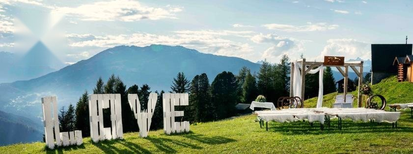
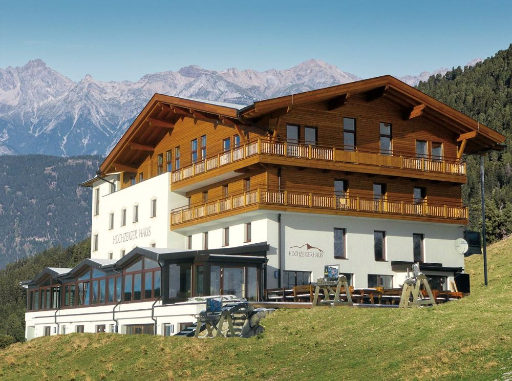
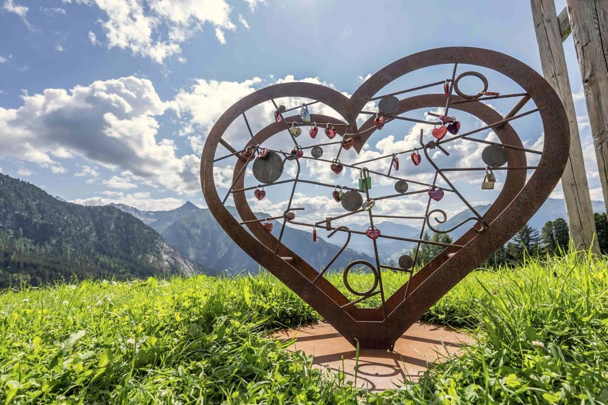
Übernachten
Die Zimmer sind direkt im Haus. Wer nach dem Feiern nicht mehr fahren will, und die letzten 4 km sind ein Forstweg, geht einfach ein paar Stufen zum Bett. Am Sonntag frühstücken wir dann alle zusammen.
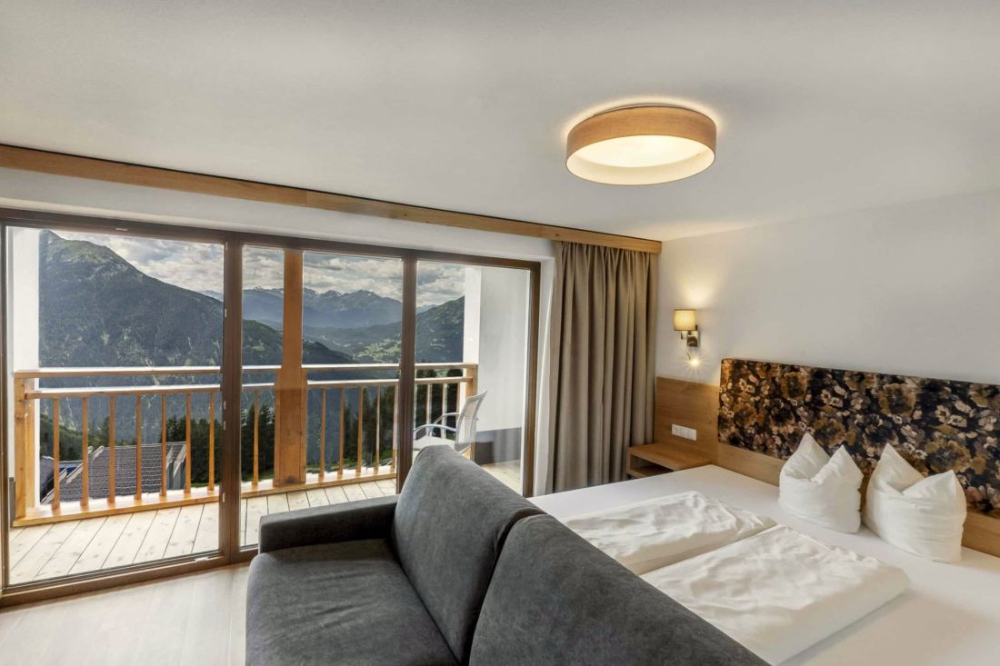
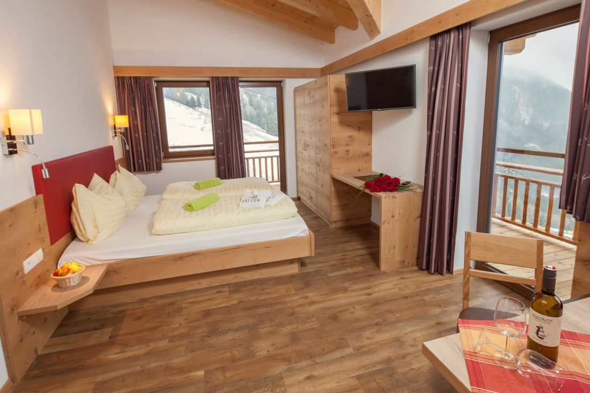
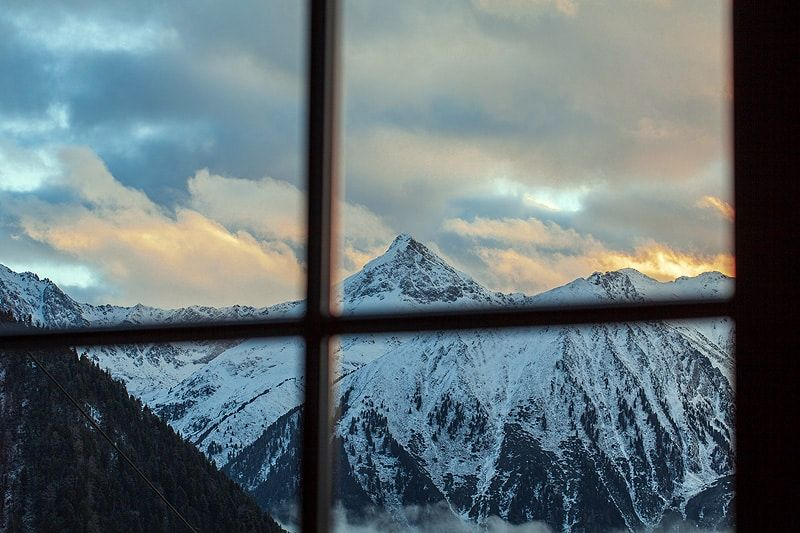
Preise laut Hochzeitsmappe 2027. Die Zimmer koordinieren wir.
Fotos
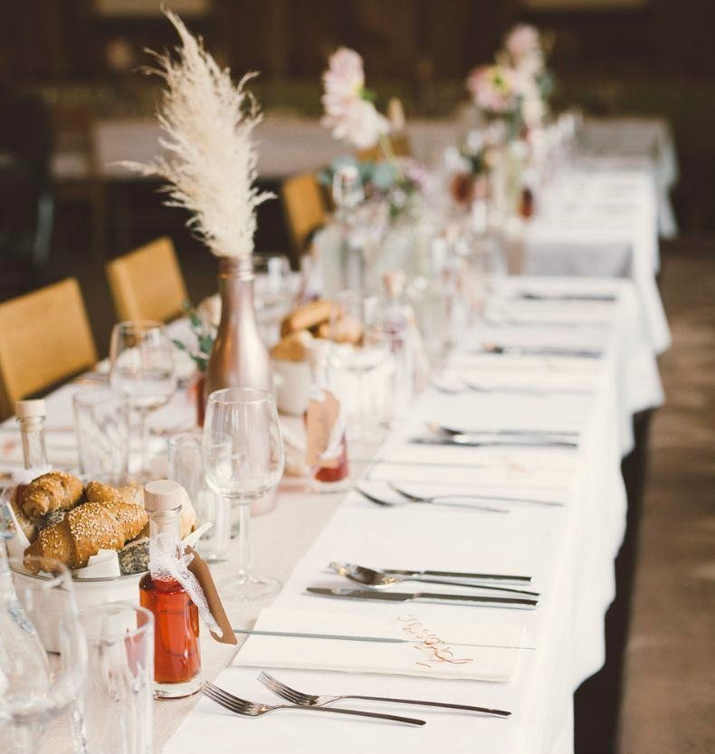
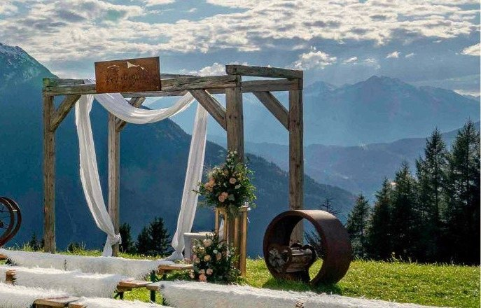
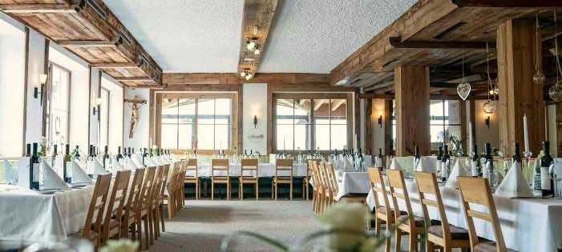
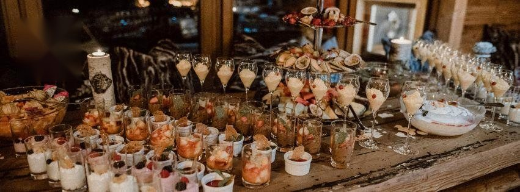
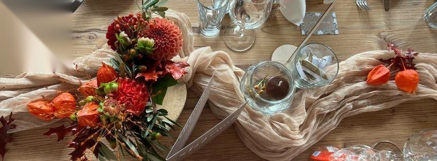
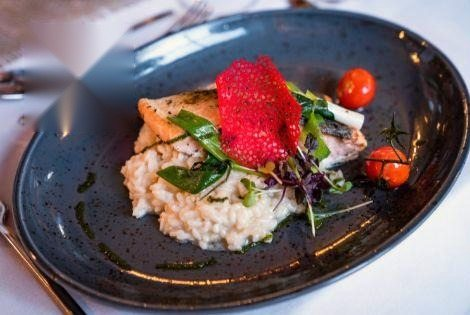
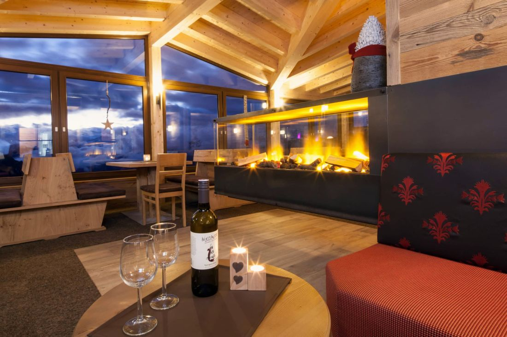
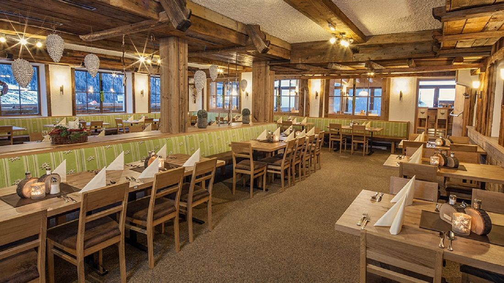
Fotos: Hochzeiger Haus. Mehr zur Location auf hochzeigerhaus.at.
Gut zu wissen
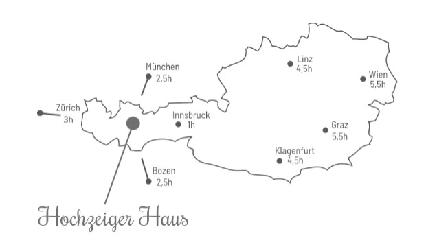